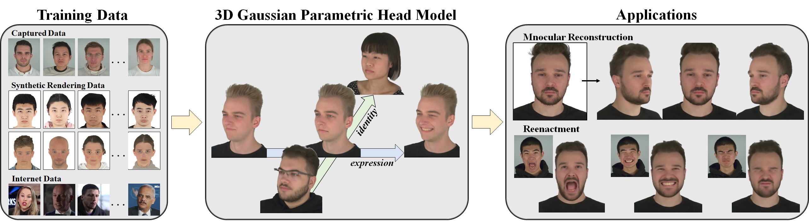

1Tsinghua University 2South China University of Technology
Creating high-fidelity 3D human head avatars is crucial for applications in VR/AR, digital human, and film production. Recent advances have leveraged morphable face models to generate animated head avatars from easily accessible data, representing varying identities and expressions within a low-dimensional parametric space. However, existing methods often struggle with modeling complex appearance details, e.g., hairstyles, and suffer from low rendering quality and efficiency. This paper introduces a novel approach, 3D Gaussian Parametric Head Model, which employs 3D Gaussians to accurately represent the complexities of the human head, allowing precise control over both identity and expression. The Gaussian model can handle intricate details, enabling realistic representations of varying appearances and complex expressions. Furthermore, this paper presents a well-designed training framework to ensure smooth convergence, providing a robust guarantee for learning the rich content. Our method achieves high-quality, photo-realistic rendering with real-time efficiency, making it a valuable contribution to the field of parametric head models. Finally, this paper applies the 3D Gaussian Parametric Head Model to monocular video or few-shot head avatar reconstruction tasks, which enables instant reconstruction of high-quality 3D head avatars even when input data is extremely limited, surpassing previous methods in terms of reconstruction quality and training speed.

Fig 1.We utilize hybrid datasets comprising captured multi-view video data and rendered image data from 3D scans for training our model. The trained model can be manipulated using decoupled identity and expression codes to produce a diverse array of high-fidelity head models. When presented with an image, our model can be adjusted to reconstruct the portrait in the image and edit the expression according to any other desired expressions.
Fig 2. The overview of our GPHM model. Our training strategy can be divided into a Guiding Geometry Model for initialization, and a final 3D Gaussian Parametric Head Model. Deformations of each model are further decoupled into identity-related, expression-related and non-face deformations. For the expression condition images, we input crop groundtruth face image or synthesized images via LivePortrait. For the non-face motion condition, we input groundtruth images with the face area masked. The renderer involves a convolutional refine network Ψ, which finally transfers the feature maps from mesh/Gaussian renderer to fine portrait images. During inference, our output exclusively comes from the Gaussian model.
@article{xu2024gphmv2,
title={GPHM: Gaussian Parametric Head Model for Monocular Head Avatar Reconstruction},
author={Xu, Yuelang and Su, Zhaoqi and Wu, Qingyao and Liu, Yebin},
booktitle={ArXiv},
year={2024}
}
AvatarMAV: Yuelang Xu, Lizhen Wang, Xiaochen Zhao, Hongwen Zhang, Yebin Liu. AvatarMAV: Fast 3D Head Avatar Reconstruction Using Motion-Aware Neural Voxels. ACM SIGGRAPH 2023 Conference Proceedings, 2023.
NeRFBlendShape: Xuan Gao, Chenglai Zhong, Jun Xiang, Yang Hong, Yudong Guo, and Juyong Zhang. Reconstructing personalized semantic facial nerf models from monocular video. ACM Transactions on Graphics (Proceedings of SIGGRAPH Asia), 2022.
INSTA: Wojciech Zielonka, Timo Bolkart and Justus Thies. Instant Volumetric Head Avatars. In Proceedings of the IEEE/CVF Conference on Computer Vision and Pattern Recognition(CVPR), 2023.
FlashAvatar: Jun Xiang, Xuan Gao, Yudong Guo and Juyong Zhang. FlashAvatar: High-fidelity Head Avatar with Efficient Gaussian Embedding. In Proceedings of the IEEE/CVF Conference on Computer Vision and Pattern Recognition(CVPR), 2024.
SplattingAvatar: Zhijing Shao, Zhaolong Wang, Zhuang Li, Duotun Wang, Xiangru Lin, Yu Zhang, Mingming Fan, Zeyu Wang. SplattingAvatar: Realistic Real-Time Human Avatars with Mesh-Embedded Gaussian Splatting. In Proceedings of the IEEE/CVF Conference on Computer Vision and Pattern Recognition(CVPR), 2024.
LivePortrait: Zhijing Shao, Zhaolong Wang, Zhuang Li, Duotun Wang, Xiangru Lin, Yu Zhang, Mingming Fan, Zeyu Wang. Liveportrait: Efficient Portrait Animation with Stitching and Retargeting Control. arXiv preprint arXiv:2407.03168.